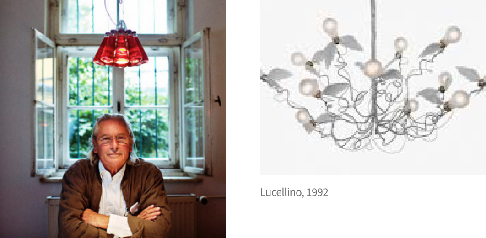

디자인이 예술이냐 아니냐 하는 논의는 많았지만, 디자인이 예술이 될 수도 있고 예술적
디자인이 가능하다는 것을 실제로 보여준 디자이
너가 바로 잉고 마우러(Ingo Maurer)다.
조명 디자인이라는 제한적인 분야에서 세계적인 명성을 구축한 매우 독특한 인물이기도 하다.
20세기 디자인 아이콘 : 산업디자이너, 최경원, 월간 <디자인>

그의 램프를 보면 표현을 중시한다. 전구를 지지하는 지지대가 있고, 전원을 연결하는 전선이 따로 있다.
흔한 디자이너의 감각으로는 두 개의 라인을 거추장스럽게 내놓진 않는다. 두 라인을 통합했을 것이다. 잉고 마우러는 그런 미니멀리즘에
입각한 산업화의 Impression을
배척한다.
바우하우스의 고향인 독일에서 태어난 디자이너임에도 불구하고 말이다. 그는 철저한
Expression 신봉자다. 지지대와 전선을 별개로 디자인해서, 작은 새 전구로 명명된
램프는
생명력을 얻었다. 지지대와 전선은 서로 꼬이고
교차하며, 역동성과 생동감이 넘친다.
잉고 마우러의 디자인은 소품종 대량생산의 산업화 과정 하에 놓인 것도 있지만, 다수는 작품으로 여길 정도로 다품종 소량 생산에 입각한다.
그의 예술적 감각을 느낄 수 있는 제품들을
살펴보겠다
먼저 팝아트다. 팝아트는 예술의 대중화이다. 대중적인 소품들도 예술이 될 수 있다는 의미다 .기업이 제품을 만들지만, 제품을 완상하는
건 소비자란 말이 있다. 잉고 마우러가
디자인했지만, 구매자가 남은 49장의 빈 종이를 채우면서 디자인을 완성한다. 컨템포러리 아트는 팝
아트의 연장선이다. 앤디 워홀이 대중화시킨 팝아트는 대중적이었지만, 보고 관람하는
수준에 머물렀던 건 예나 지금이나 마찬가지였다.
지금은 팝아트의 개념이 확장됐다. 관람객과의 소통, 교류를 중시하며, 체험, 참여까지 가능케 한다. 설치미술이란 장르로 말이다.
그렇게
봤을 때, 97년도에 등장한 메모지란 이름의 전등은 디자인의 예술화라 해도 과언이 아니다. 관람객(구매자)이 참여 가능한 하나의 완벽한
설치미술이다.
[출처: 자동차 디자인 칼럼니스트 이준호_2. 잉고 마우러 Ingo maurer, 독일 조명_중 ]